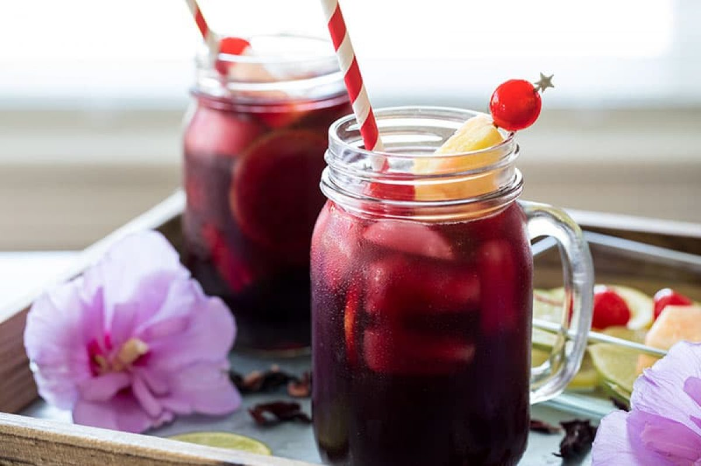

Sobolo - Spicy Hibiscus Drink
Sobolo is popular across several countries and continents; for example,
in Nigeria, it is known as zobo and is made slightly different from how
it is made here in Ghana and a delightful kick that'll have you coming back over and over

Ingredients
- 1 Cup Sobolo leaves ( Hibiscus leaves)
- 1 Medium Pineapple
- 1 large Lemon
- 15 pieces Cloves
- 1 habanero pepper
- 8-10 pieces Grains of Selim
- 2 root Ginger
- Generous amount of Dried Chili
- 2 pieces Prekese
Preparation
- Wash, peel, and cut pineapple into chunks, blend, and set aside.
- In a pot, add your Sobolo leaves, lemon, skin of the pineapple, cloves,
grains of selim, ginger, dried pepper and Prekese.
- Add blended pineapple and the desired amount of water.
I used about 3 cups of the medium-sized calabash
- Cover and bring to a boil on medium heat for about 10 minutes
- Drain the Sobolo juice using a fine sieve or Cheesecloth. Some people
prefer to drain their Sobolo twice or thrice for extra smoothness.
- Allow it to cool completely before adding a sweetener. Sugar, honey,
or another sweetener option can work but to keep it healthier using a fruit as a sweetener is ideal.
- Keep refrigerated and serve chilled